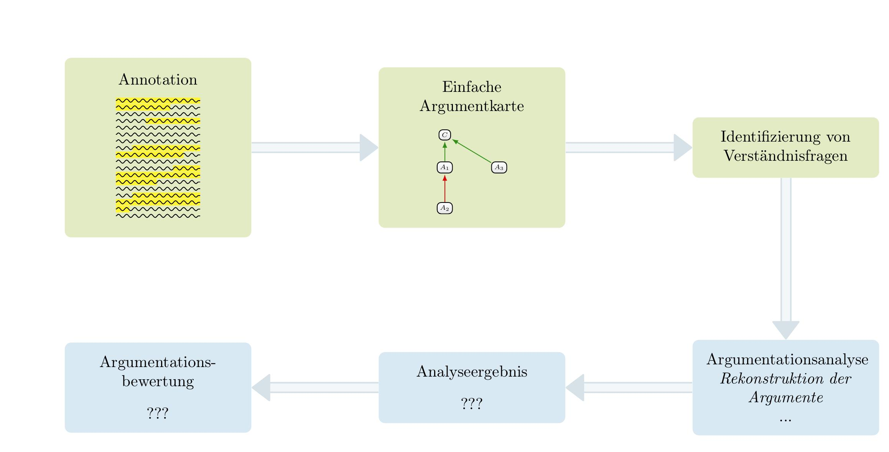

Institut für Philosophie
2026-10-30
Die wichtigsten Punkte der letzten Sitzung:

<Kontra-Argument des Theodizee Problems>: Weil es Übel gibt, existiert Gott nicht.
(1) Wenn es Übel in der Welt gibt, dann gibt es keinen allmächtigen und
allgütigen Gott gibt.
(2) Es gibt Übel in der Welt.
----
(3) *Also:* Es gibt keinen allmächtigen und allgütigen Gott.<Argumentschema Modus Ponens>
(1) Wenn p, dann q.
(2) p.
-- mit Modus Ponens aus 1,2 --
(3) *Also*: q.Jede Einsetzung dieses Schemas mit Aussagesätzen ergibt einen deduktiv gültigen Schluss. Das entsprechende Schlussmuster heißt Modus Ponens.
Ziel: Nachweis deduktiver Gültigkeit von Argumentrekonstruktionen unter Verwendung bekannter Schlussmuster.
👉 Dafür muss sichergestellt sein, dass die in den Argumentrekonstruktionen verwendeten Sätze auch wirklich die logisch-semantische Form besitzen, die in den entsprechenden Schlussmustern benannt werden.
Formalisierung
Eine Formalisierung ist die Ermittlung der logisch-semantischen Form einer Aussage oder eines Arguments, in der z.T. von deren Inhalt abstrahiert wird. Die ermittelte Form wird häufig über Buchstaben und Symbole dargestellt, um die Form explizit zu machen und um damit besser prüfen zu können, ob und welche Schlussmuster verwendet werden können.
Zu einer Formalisierung gehören
„Wenn Peter genügend Schlussmuster kennt, kann Peter prüfen, ob umgangssprachlich formulierte Argumente deduktiv gültig sind.“
Logisch-semantische Form des Satzes: Wenn-Dann-Satz der Form „Wenn p, dann q.“ (Subjunktion, (materiales) Konditional)
p → q oder p ⊃ qVerwendete Zeichen:
→, ⊃: stehen für den Satzoperator<Kontra-Argument des Theodizee Problems>: Weil es Übel gibt, existiert Gott nicht.
(1) Wenn es Übel in der Welt gibt, dann gibt es keinen allmächtigen und
allgütigen Gott gibt.
// p → q
(2) Es gibt Übel in der Welt.
// p
-- aus 1,2 mit Modus Ponens --
(3) *Also:* Es gibt keinen allmächtigen und allgütigen Gott.
// qZuordnungsliste:
| Platzhalter | Steht für |
|---|---|
| p | „Es gibt Übel in der Welt.“ |
| q | „Es gibt keinen allmächtigen und allgütigen Gott.“ |
Standarddarstellung von Argumenten: Listendarstellung der Prämissen-Konklusion-Struktur von Argumenten (explizite Kennzeichnung der Rolle von Sätzen als Prämissen, Zwischenkonklusion bzw. Konklusion).
Hinweis
Jeder Listenpunkt enthält genau einen Aussagesatz.
Erweiterte Standarddarstellung von Argumenten
Die erweiterte Standarddarstellung von Argumenten enthält zusätzlich zur Standarddarstellung von Argumenten die folgenden Angaben:
Logisch-semantische Form der Sätze:
| Satz | Satzform |
|---|---|
| 1 | p |
| 2 | p → q |
| 3 | q |
Zuordnungsliste: …
| Platzhalter | Steht für |
|---|---|
| p | „Es gibt Übel in der Welt.“ |
| q | „Es gibt keinen allmächtigen und allgütigen Gott.“ |
Wichtig
Das, wofür die Platzhalter \(p,q,..\) stehen, sollte nach Möglichkeit aus sich heraus verständlich sein. Zeit- und Ortsadverbien wie „jetzt“, „heute“, „hier“ und „dort“ sollten möglichst durch genaue Zeit- und Ortsangaben ersetzt werden. Personalpronomina wie „ich“, „du“, „er“ usw. sollten durch Namen ersetzt werden, sofern sie bekannt sind.
Bsp.: Tamara Meyer sagt am 11.02.2022: „Ich fühle mich heute krank“.
Der von Tamara Meyer geäußerte Satz könnte so formalisiert werden: p mit der Einsetzung p: „Tamara Meyer fühlt sich am 11.02.2022 krank.“
Wir unterscheiden:
p und q„Ich hoffe, dass man in dieser Übung etwas Sinnvolles lernen kann.“
„Ich hoffe, dass man in dieser Übung etwas Sinnvolles lernen kann.“
Aussagen
Eine Aussage ist der Sinn eines mündlich oder schriftlich geäußerten Aussagesatzes. Durch die Äußerung eines solchen Satzes wird behauptet, dass etwas der Fall ist. Aussagen sind in der Regel wahr oder falsch.
| Satzoperator | Satzform (schematisch) | Aussagenlogische Formel |
|---|---|---|
| Subjunktion/ (materiales) Konditional | 'Wenn p, dann q.' |
‘\(p\rightarrow q\)’ oder ’\(p\supset q\)’ |
| Bisubjunktion (Bikonditional) | 'p genau dann, wenn q.' |
‘\(p\leftrightarrow q\)’ oder ’\(p\equiv q\)’ |
| Disjunktion (Adjunktion) | 'p oder q.' |
’\(p\vee q\)’ |
| Konjunktion | 'p und q.' |
‘\(p\wedge q\)’ oder ‘\(p.q\)’ oder ’\(p\&q\)’ |
| Negation | 'Es ist nicht der Fall, dass p.' |
‘\(\neg p\)’ oder auch ’\(\sim p\)’ |
<Kontra-Argument des Theodizee Problems>: Weil es Übel gibt, existiert Gott nicht.
(1) Wenn es Übel in der Welt gibt, dann gibt es keinen allmächtigen und
allgütigen Gott gibt.
// p → q
(2) Es gibt Übel in der Welt.
// p
-- aus 1,2 mit Modus Ponens --
(3) *Also:* Es gibt keinen allmächtigen und allgütigen Gott.
// q🤔 Können wir das auch anders formalisieren?
<Kontra-Argument des Theodizee Problems>: Weil es Übel gibt, existiert Gott nicht.
(1) Wenn es Übel in der Welt gibt, dann gibt es keinen allmächtigen und
allgütigen Gott gibt.
// p → ¬q
(2) Es gibt Übel in der Welt.
// p
-- aus 1,2 mit Modus Ponens --
(3) *Also:* Es gibt keinen allmächtigen und allgütigen Gott.
// ¬qZuordnungsliste:
| Platzhalter | Steht für |
|---|---|
| p | „Es gibt Übel in der Welt.“ |
| q | „Es gibt einen allmächtigen und allgütigen Gott.“ |
Mehrdeutigkeit in der Formalisierung
Es gibt häufig mehrere Möglichkeiten, einen Satz zu formalisieren. Im Kontext der Gültigkeitsprüfung geht es darum, eine adäquate Formalisierung zu finden, so dass gezeigt werden kann, dass das vermeintlich gültige Argument tatsächlich gültig ist.
Adäquatheitsbedingungen der aussagenlogischen Formalisierung
👉 Die Adäquatheitsbedingungen müssen geprüft werden durch das Anlegen einer Zuordnungsliste und einer Rückübersetzung anhand dieser Liste und der angenommenen logisch-semantischen Form.
(1) Wenn es Übel in der Welt gibt, dann gibt es keinen allmächtigen und
allgütigen Gott gibt.
// p → ¬q
(2) Es gibt Übel in der Welt.
// p
-- aus 1,2 mit Modus Ponens --
(3) *Also:* Es gibt keinen allmächtigen und allgütigen Gott.
// ¬qZuordnungsliste:
| Platzhalter | Steht für |
|---|---|
| p | „Es gibt Übel in der Welt.“ |
| q | „Es gibt einen allmächtigen und allgütigen Gott.“ |
Rückübersetzung: (¬: Es ist nicht der Fall, dass)
¬q: Es ist nicht der Fall, dass es einen allmächtigen und allgütigen Gott gibt. ✅p → ¬q: Wenn es Übel in der Welt gibt, dann ist es nicht der Fall, dass es einen allmächtigen und allgütigen Gott gibt. ✅Sätze der Form „Wenn p, dann q.“ (auch: Subjunktionen) sind Bedingungssätze: Sie drücken notwendige und hinreichende Bedingungen aus.
Nur wenn Peter Logikkurse erfolgreich besucht hat, kann er die logisch-semantische Form von Sätzen korrekt analysieren. Da er das kann, hat er wohl solche Kurse erfolgreich besucht.
Textnahe einfache Standarddarstellung:
(1) Nur wenn Peter Logikkurse erfolgreich besucht hat, kann er
die logisch-semantische Form von Sätzen korrekt analysieren.
// Form: Nur wenn p, dann q.
(2) Peter kann die logisch-semantische Form von Sätzen korrekt
analysieren.
// q
-- aus 1,2 mit ??? --
(3) *Also:* Peter hat Logikkurse erfolgreich besucht
// p🤔 Ist die angegebene schematische Satzform auch eine Subjunktion oder etwas anderes?
Nur wenn Peter Logikkurse erfolgreich besucht hat, kann er die logisch-semantische Form von Sätzen korrekt analysieren. Da er das kann, hat er wohl solche Kurse erfolgreich besucht.
Reformulierung der ersten Version:
(1) Wenn Peter die logisch-semantische Form von Sätzen korrekt
analysieren kann, hat er erfolgreich Logikkurse besucht.
// q → p.
(2) Peter kann die logisch-semantische Form von Sätzen korrekt
analysieren.
// q
-- aus 1,2 mit Modus Ponens --
(3) *Also:* Peter hat Logikkurse erfolgreich besucht
// p🤔 Darf man das?
Achtung mit „nur“ Konstruktionen
Steht das Wort „nur“ unmittelbar vor dem Ausdruck „wenn“ oder „dann“, „dreht“ es den Sinn des Satzes um. In Sätzen der Form „nur wenn q, dann p“ und „p nur dann, wenn q“ ist q eine notwendige Bedingung. Beide Sätze sind im Sinne von „wenn p, dann q“ zu verstehen.
👉 Nur-wenn-dann Sätze sind auch Subjunktionen. Es gibt viele Formulierungsvarianten. Machen Sie sich immer klar, was hinreichende und notwendige Bedingungen sind und formulieren Sie Subjunktionen in Argumentrekonstruktionen immer in der Form „Wenn p, dann q.“ aus.
Die folgenden Formulierungen drücken die gleiche logische Form aus wie Sätze der Form „Wenn p, dann q.“:
Nur wenn Peter Logikkurse erfolgreich besucht hat, kann er die logisch-semantische Form von Sätzen korrekt analysieren. Da er das kann, hat er wohl solche Kurse erfolgreich besucht.
Reformulierung der ersten Version:
(1) Wenn Peter die logisch-semantische Form von Sätzen korrekt
analysieren kann, hat er erfolgreich Logikkurse besucht.
// q → p.
(2) Peter kann die logisch-semantische Form von Sätzen korrekt
analysieren.
// q
-- aus 1,2 mit Modus Ponens --
(3) *Also:* Peter hat Logikkurse erfolgreich besucht
// p🤔 Darf man das? Ja: Wir haben den Nur-Wenn-Satz umformuliert ohne seine Bedeutung zu verändern.
Herausforderung: Die in den uns bekannten Schlussmustern auftauchenden Satzformen tauchen häufig nicht explizit formuliert in umgangssprachlichen Sätzen auf!
Wie geht man mit diesem Problem um?
Lösung: Wir reformulieren die Ausgangssätze so um, dass sie
Es wird sich zeigen, dass man viele Sätze so umformulieren kann, dass die bekannten Schlussmuster angewendet werden können.
<Argumentschema Modus Ponens>
(1) Wenn p, dann q.
// p → q
(2) p.
-- mit Modus Ponens aus 1,2 --
(3) *Also*: q.Eine weitere Variante unser Rekonstruktion des Kontra-Arguments (vgl. Mitschrift der letzten Sitzung):
<Kontra-Argument des Theodizee Problems>: Weil es Übel gibt, existiert Gott nicht.
(1) Wenn es einen allmächtigen und allgütigen Gott gibt,
dann gibt es kein Übel in der Welt.
(2) Es ist nicht der Fall, dass es keine Übel in der Welt
gibt.
-- aus 1,2 mit ??? --
(3) *Also:* Es gibt keinen allmächtigen und allgütigen Gott.<Kontra-Argument des Theodizee Problems>: Weil es Übel gibt, existiert Gott nicht.
(1) Wenn es einen allmächtigen und allgütigen Gott gibt,
dann gibt es kein Übel in der Welt.
// p → q
(2) Es ist nicht der Fall, dass es keine Übel in der Welt
gibt.
// ¬q
-- aus 1,2 mit Modus Tollens --
(3) *Also:* Es gibt keinen allmächtigen und allgütigen Gott.
// ¬p👉 Hier wird in der zweiten Prämisse der Nachsatz der Subjunktion verneint. (In der Rede von notwendigen und hinreichenden Bedingungen: Eine durch die erste Prämisse ausgedrückte notwendige Bedingung für die Existenz Gottes wird verletzt.)
<Argumentschema Modus Tollens>
(1) Wenn p, dann q.
// p → q
(2) Es ist nicht der Fall, dass q.
// ¬q
-- mit Modus Tollens aus 1,2 --
(3) *Also*: Es ist nicht der Fall, dass p.
// ¬p<Argumentschema Transitivität>
(1) Wenn p, dann q.
// p → q
(2) Wenn q, dann r.
// q → r
-- aus 1,2 mit Transitivität --
(3) *Also*: Wenn p, dann r.
// p → rBeispiel:
(1) Wenn Tanja Argumente rekonstruieren kann, kann Tanja
Sätze formalisieren.
(2) Wenn Tanja Sätze formalisieren kann, ist Tanja
gut in Logik.
-- aus 1,2 mit Transitivität --
(3) *Also*: Wenn Tanja Argumente rekonstruieren kann,
ist Tanja gut in Logik.<Argumentschema Kontraposition>
(1) Wenn p, dann q.
// p → q
-- aus 1 mit Kontraposition--
(2) *Also*: Wenn q falsch ist, dann ist p falsch.
// ¬q → ¬pBeispiel:
(1) Wenn Tanja Argumente rekonstruieren kann,
ist Tanja gut in Logik.
-- aus 1 mit Kontraposition --
(2) *Also*: Wenn Tanja nicht gut in Logik ist, kann Tanja
Argumente nicht rekonstruieren.Die wichtigsten Punkte der heutigen Sitzung:
🙏 Danke!